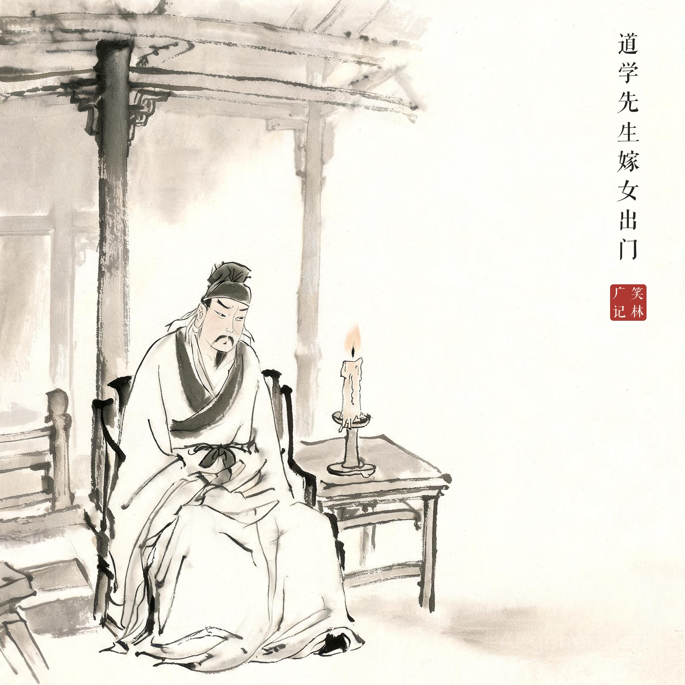
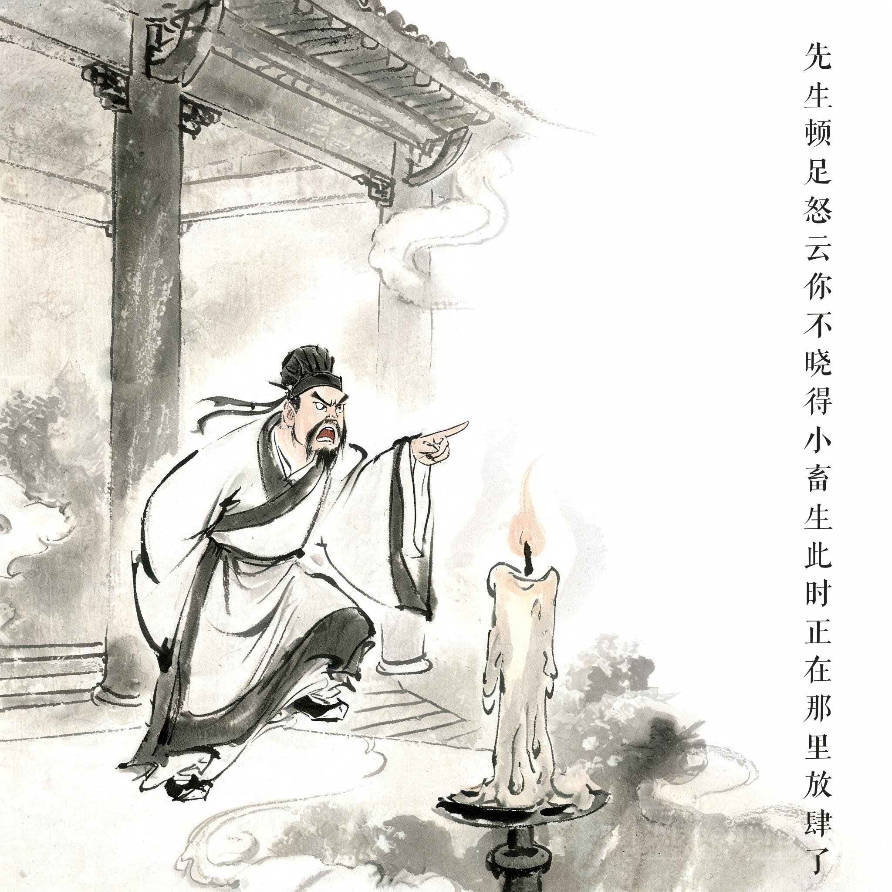

《笑林广记 · 腐流部》（[清]游戏主人纂集）
道学先生嫁女出门，至半夜，尚在厅前徘徊踱索。仆云："相公，夜深请睡罢。"先生顿足怒云："你不晓得，小畜生此时正在那里放肆了！"
一位道学先生把女儿嫁出门，到了半夜，还在厅前踱来踱去。仆人劝道："相公，夜深了，请安歇吧。"先生跺着脚怒道："你不懂，那小畜生这时候正在那里放肆呢！"
道学绷了一整天的架子，到半夜终于绷不住。"放肆"二字骂得冠冕堂皇，火候却全烧在自家心思上——满口的礼，掩不住一肚子的惦记。